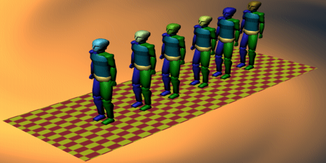
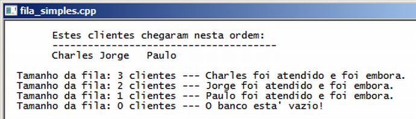

Curso completo de linguagem C++
Gameprog - Escola de programação de jogos digitais
Contato: gameprog.br@gmail.com
track22.html
22. STL 3/5 - Fila simples: <queue>
22.1 Visão geral

A fila é uma estrutura de dados fácil de ser entendida porque temos os exemplos
da vida real. Por exemplo, em um banco os clientes que chegam vão para o fim da
fila; os atendimentos são feitos a partir da frente da fila, aonde os primeiros
que chegaram são os primeiros a serem atendidos.
Essa conceituação se repete na estrutura de dados fila implementada pela classe
genérica queue da biblioteca STL. Os dados que chegam (int, string, etc.) vão
para o fim da fila que cresce a cada 'cliente' que chega. O primeiro dado
a ser processado é o que está na frente da fila, e assim que esse dado é
processado ele 'vai embora' e é retirado da fila.
Veja abaixo a saída de nosso programa que simula uma fila de banco aonde
chega três clientes e que são atendidos na sequência:

// fila_simples.cpp
// Esse programa demonstra o uso de uma fila simples <queue>
#include <iostream>
#include <string>
#include <queue>
using namespace std;
// ----------------- Nossa função principal começa aqui ------------------------
int main() {
system("color f0"); system("title fila_simples.cpp");
queue<string> filaClientes;
string cliente[6];
cliente[0] = "Pedro";
cliente[1] = "Paulo";
cliente[2] = "Charles";
cliente[3] = "Samantha";
cliente[4] = "Jorge";
cliente[5] = "Sampaio";
// Chegou o cliente 2, 4 e 1
filaClientes.push ( cliente[2] );
filaClientes.push ( cliente[4] );
filaClientes.push ( cliente[1] );
cout << "\n\tEstes clientes chegaram nesta ordem: \n";
cout << "\t-------------------------------------- \n";
cout << "\t" << cliente[2];
cout << "\t" << cliente[4];
cout << "\t" << cliente[1] << "\n\n";
// Vamos atender quem chegou na ordem
for (int ncx = 0; !filaClientes.empty(); ncx++) {
// verifica quem está na frente
cout << " Tamanho da fila: " << filaClientes.size() << " clientes --- ";
cout << filaClientes.front();
cout << " foi atendido e foi embora. \n";
// manda cliente embora
filaClientes.pop();
} // end for ncx
cout << " Tamanho da fila: " << filaClientes.size() << " clientes --- ";
if (filaClientes.empty()) cout << "O banco esta' vazio! \n\n";
cout << "\n"; system("pause");
} // ---------------------- fim da função main()
Declarando a fila
#include <queue>
queue<string> filaClientes;
As linhas acima ilustram o arquivo da bibliota STL que você deve incluir
e a sintaxe para declarar uma fila: queue<tipo_de_dado> nome_da_fila;
Colocando dados na fila
cliente[2] = "Charles";
cliente[4] = "Jorge";
cliente[1] = "Paulo";
// Chegou o cliente 2, 4 e 1
filaClientes.push ( cliente[2] );
filaClientes.push ( cliente[4] );
filaClientes.push ( cliente[1] );
Para incluir dados na fila, lembrando que o dado vai para a última
posição da fila, é utilizado o método .push( elemento ) do objeto queue.
Obtendo os dados da fila
cout << filaClientes.front();
O método .front() retorna a referência do objeto que está na ponta frontal
da fila. O método .back() retorna referência ao último elemento da fila.
Excluindo dados da fila
// manda o cliente embora
filaClientes.pop();
O método .pop() exclui o dado que está na ponta frontal da fila, movendo uma
posição acima os dados que estão abaixo do item deletado.
Verificando tamanho da fila
cout << " Tamanho da fila: " << filaClientes.size() << " clientes --- ";
if (filaClientes.empty()) cout << "O banco esta' vazio! \n\n";
O método .size() retorna o tamanho da fila e o método .empty() verifica se
a fila está vazia retornando true ou false.